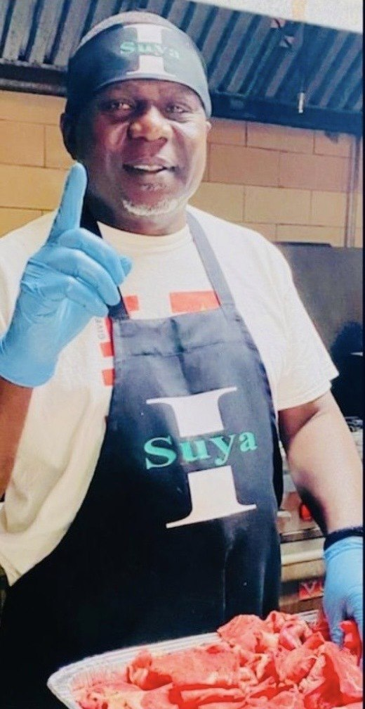
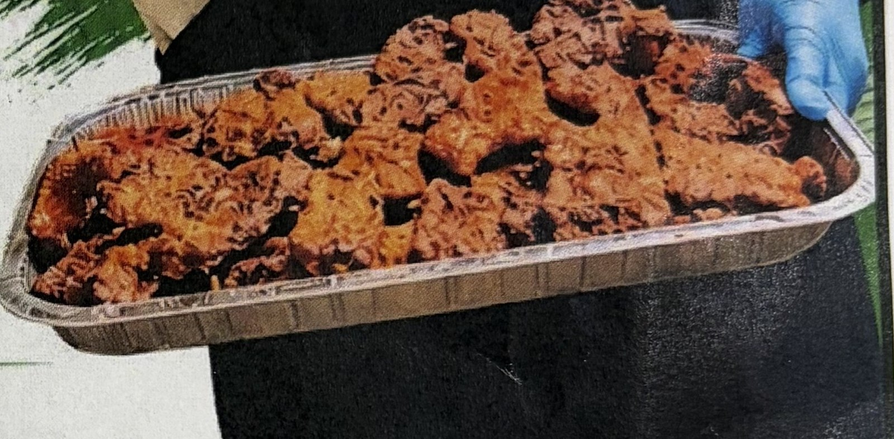
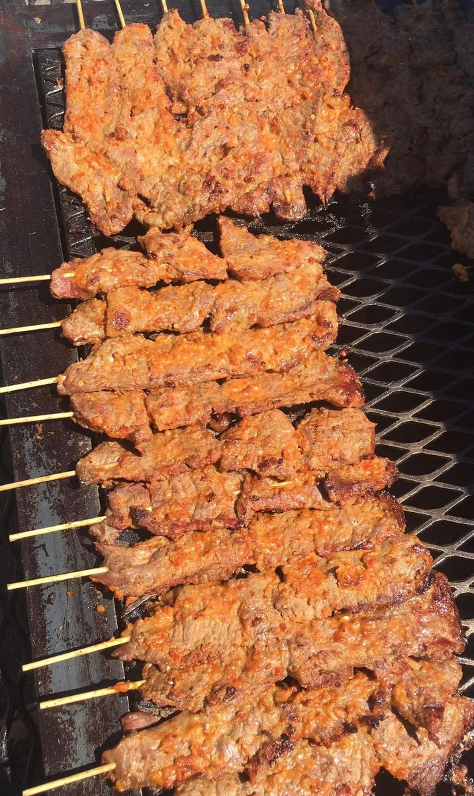
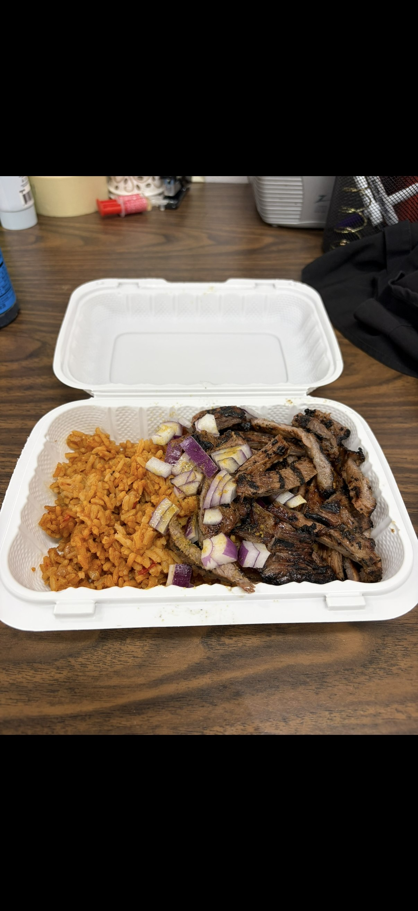
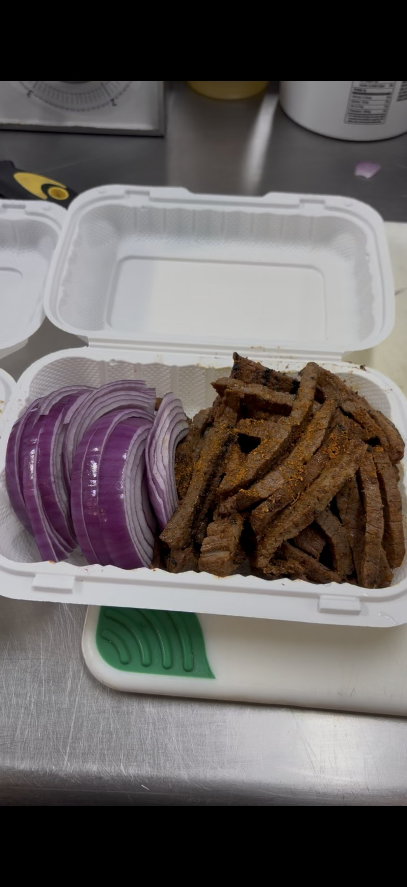
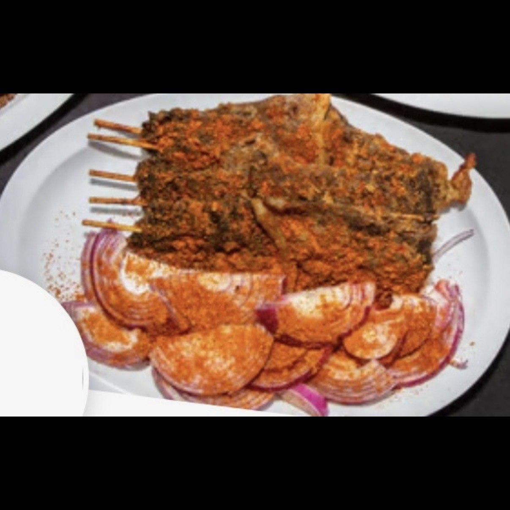
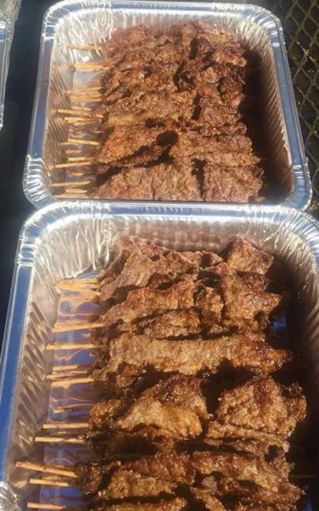
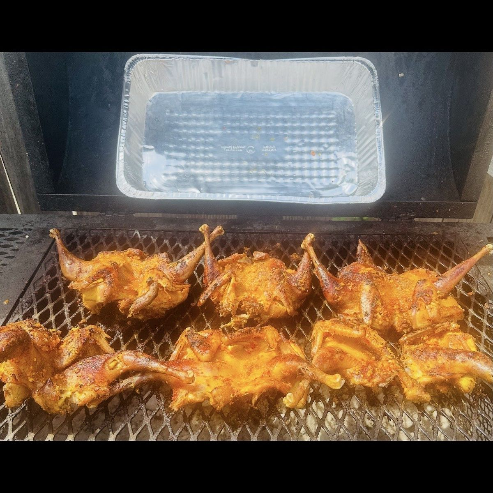
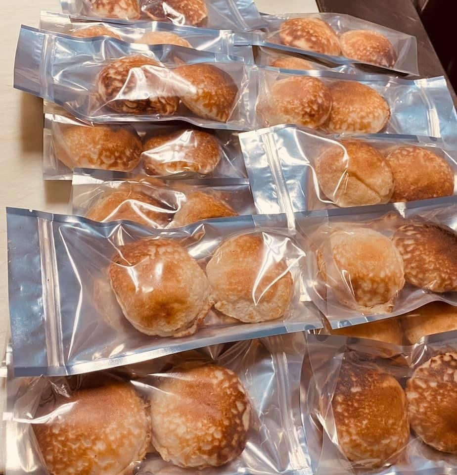
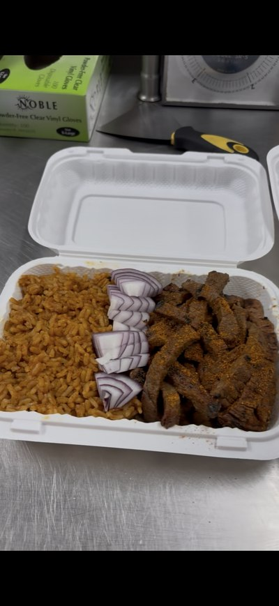

What We Serve
The Menu
Tap a category to see what's on the grill.


Authentic · Traditional · Unforgettable
Authentic · Traditional · Unforgettable
Malam Ishaku Suya serves hand-seasoned, charcoal-grilled Nigerian suya, kilishi & jollof in Glen Burnie, MD — made the way it's made back home, and available for pickup, delivery or full event catering.

"I traveled home to Nigeria to learn how to make this exquisite suya cuisine from the experts and to develop the specific flavors of our spices."
Our Story
Malam Ishaku Suya is a family-owned and operated Nigerian kitchen now based at 509 McCormick Dr, Suite G in Glen Burnie. Every skewer is hand-rubbed in our house spice blend — peppers, ginger, Maggi seasoning and roasted peanuts — then grilled fresh over charcoal, the traditional way.
Ranked #1 African Restaurant in Baltimore
BusinessRate 2025, based on Google Reviews
What We Serve
Tap a category to see what's on the grill.
Hungry Yet?
The meat is sliced and seasoned with traditional northern Nigerian ingredients, marinated overnight and grilled to delicious perfection.
See the MenuEvents & Catering
Let Malam Ishaku Suya cater your special occasion with mouthwatering, authentic Nigerian suya — freshly grilled over charcoal and served with professional setup.
⏰ Please call 4–6 weeks in advance to secure your event date — this is important, as slots fill up fast.
📞 Call Now to Book — (410) 570-1530
Photos
Hover or tap a photo for a closer look.








Customer Love
4.9★ on Google, DoorDash & Uber Eats, plus Yelp, Restaurant Guru & Birdeye (149+ reviews across platforms).
★★★★★
"This is the BEST Suya and Jollof I have ever had. I will be spending a lot of money here. Super good!"
★★★★★
"It was amazing! Very spicy so be careful, but the steak was ssssoooo flavorful I couldn't stop eating it. Def going back!"

★★★★★
"Guys I opened this food and my mouth dropped open. The size of what I got is so great for the price. It's more than fair…"
★★★★★
"It transports you back to Nigeria with every bite. The family that owns Malam Ishaku Suya are the kindest and nicest people you will ever meet."
★★★★★
"This is the best suya in the Western Hemisphere, period — soft, with the perfect amount of spice and heat."
★★★★★
"If you've had suya before and you're not getting it from Malam Ishaku, you're not eating real suya."
★★★★★
"Best kilishi I've had, bar none. The suya is fantastic too."
★★★★★
"Smoky. Spicy. Flavorful. Exactly what suya should taste like."
Choose your favorite delivery app, or call ahead for pickup.
Find Us
📣 We've moved! Our new location is in Glen Burnie — the old Caton Ave address is no longer active.
Our new Glen Burnie location.
Call or text to place your order.
Zelle & Cash App: (410) 570-1530
| Sunday | 12:00 PM – 4:40 PM |
| Monday | Closed |
| Tuesday | 12:00 PM – 5:40 PM |
| Wed – Sat | 11:00 AM – 7:40 PM |
Hours may vary on holidays — please call to confirm.
Yes — we've relocated to 509 McCormick Dr, Suite G, Glen Burnie, MD 21061. The old Caton Ave, Baltimore address is no longer our location.
Yes! We cater weddings, corporate events, birthdays, private parties, festivals and community events. Call (410) 570-1530 to book.
Yes — order through DoorDash or Uber Eats using the links above, or call ahead for pickup.
It's hand-seasoned the traditional Northern Nigerian way with peppers, ginger, Maggi seasoning and roasted peanuts, then made in-house rather than mass-produced.
Order online, or call ahead and swing by — Wed to Sun, fresh off the grill.